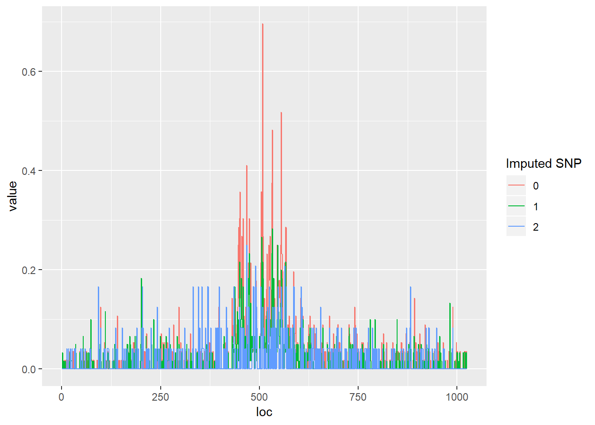

24 SNPs, for 70 individuals. SNPs are single nucleotide polymorphism - a common type of genetic variation among people (must be seen in at least some x% threshold of the population to be a valid SNP). An SNP may be replacing a particular nucleotide of a DNA (C for a T, for example). See here for some details. Our data is genotype data at genetic variants (mainly SNPs), coded as a number, \(g \in \{0,1,2\}\), representing the number of copies of the minor allele (which may be one of the A,T,G,C I think?). An example illustrated in class showed how we may have, for two nucleotides, say AG, the possible combinations: AA, AG, GA, GG, with one of these being coded as a ‘minor allele’, and hence giving us either 0, 1 or 2 copies of it. Some (standard) imputation is then performed to generate probabilities of each combination, and the final number (a value between 0 and 2) represents the probability-weighted average of the number of copies of the minor allele at the single SNP of interest. 1
## $chr17.10159002
##
## 0 0.020 0.021 0.025 0.031 0.034 0.037 0.042 0.052 0.053 0.058 0.068
## 43 1 1 1 1 2 1 1 1 2 1 1
## 0.069 0.082 0.087 0.089 0.122 0.129 0.233 0.531 0.543 1
## 1 1 1 1 1 1 1 1 1 5
##
## $chr17.10159236
##
## 0 0.002 0.003 0.368 0.378 0.379 0.502 0.631 0.702 0.776 0.785 0.791
## 35 4 7 1 1 1 1 1 1 1 1 1
## 0.834 1 1.626 2
## 1 12 1 1
##
## $chr17.10160091
##
## 0 0.000 0.195 1 1.000 2
## 37 19 1 10 2 1
##
## $chr17.10160195
##
## 0 0.002 0.003 0.004 0.345 0.346 0.518 0.740 0.997 0.999 1 1.003
## 19 1 4 4 4 1 1 1 1 2 25 1
## 1.440 1.835 2
## 1 1 4
##
## $chr17.10160499
##
## 0 0.002 0.003 0.022 0.026 0.078 0.082 0.090 0.091 0.097 0.098 0.120
## 42 4 1 1 1 1 2 1 1 1 1 1
## 0.144 0.154 0.160 0.165 0.176 0.222 1
## 1 1 2 1 1 1 6
##
## $chr17.10160773
##
## 0 0.000 0.462 1 1.000
## 34 16 1 14 5
##
## $chr17.10161074
##
## 0 0.000 0.461 1 1.000
## 34 16 1 14 5
##
## $chr17.10161112
##
## 0 0.000 0.339 1 1.000 2
## 26 12 1 16 9 6
##
## $chr17.10161218
##
## 0 0.014 0.017 0.021 0.025 0.027 0.030 0.031 0.042 0.045 0.053 0.057
## 43 1 1 1 1 2 1 1 1 1 1 1
## 0.060 0.072 0.076 0.090 0.098 0.122 0.219 0.375 0.468 0.473 1
## 1 1 1 1 1 1 1 1 1 1 5
##
## $chr17.10161395
##
## 0 0.002 0.003 0.004 0.460 0.994 0.997 0.998 1 1.000
## 34 5 10 1 1 1 1 1 14 2
##
## $chr17.10161485
##
## 0 0.002 0.003 0.004 0.055 0.076 0.090 0.322 0.935 0.972 0.987 0.988
## 21 1 1 1 1 1 1 1 1 1 3 2
## 0.989 0.991 0.995 1 1.082 1.357 1.974 1.975 1.977 2
## 1 1 1 18 1 1 1 1 1 9
##
## $chr17.10162386
##
## 0 0.002 0.004 0.040 0.054 0.076 0.090 0.342 0.956 0.982 0.991 0.992
## 21 1 1 1 1 1 1 1 1 1 3 2
## 0.993 0.994 0.999 1 1.086 1.574 1.982 1.983 2
## 1 1 1 18 1 1 2 1 9
##
## $chr17.10162576
##
## 0 0.002 0.003 0.024 0.033 0.042 0.067 0.713 0.970 0.975 0.976 0.979
## 15 1 4 1 1 1 1 1 1 1 1 1
## 0.984 0.991 1 1.000 1.003 1.093 1.796 1.976 2
## 1 1 26 2 1 1 1 1 7
##
## $chr17.10162681
##
## 0 0.000 0.379 1 1.000
## 36 16 1 12 5
##
## $chr17.10162695
##
## 0 0.002 0.378 1 1.000
## 36 16 1 12 5
##
## $chr17.10162786
##
## 0 0.000 0.302 1 1.000 2 2.000
## 19 6 1 20 11 9 4
##
## $chr17.10162874
##
## 0 0.000 0.376 1 1.000
## 36 16 1 12 5
##
## $chr17.10162892
##
## 0 0.002 0.003 0.004 0.027 0.029 0.150 0.180 0.200 0.245 0.326 0.336
## 42 5 4 1 1 1 1 1 1 1 1 1
## 0.425 0.438 0.457 0.808 1
## 1 1 1 1 6
##
## $chr17.10163408
##
## 0 0.003 0.338 0.797 1 1.001 1.004 1.006 1.041
## 36 16 1 1 12 1 1 1 1
##
## $chr17.10163424
##
## 0 0.002 0.003 0.310 0.786 1 1.000 1.001 1.034
## 37 2 14 1 1 11 1 2 1
##
## $chr17.10163443
##
## 0 0.002 0.003 0.304 0.782 1 1.000 1.001 1.033
## 37 1 15 1 1 11 1 2 1
##
## $chr17.10163532
##
## 0 0.062 0.063 0.111 0.120 0.132 0.157 0.158 0.568 0.783 0.987 0.991
## 11 2 1 1 1 1 1 1 1 1 1 1
## 0.992 1 1.012 1.036 1.038 1.049 1.076 1.083 1.515 1.896 1.897 2
## 1 28 1 1 1 1 1 1 1 1 1 9
##
## $chr17.10163747
##
## 0 0.000 0.002 0.209 1 1.000
## 37 15 1 1 11 5
##
## $chr17.10163945
##
## 0 0.000 0.361 1 1.000 2
## 33 17 1 13 4 2Counts at 1024 bases, for 70 individuals.
## No id variables; using all as measure variablesThe goal of this project is to: - Identify base locations which contain significant effects between individual SNPs and the count data obtained from sequencing - Estimate the effect of the SNP value on the sequenced count data at each base
So, this exercise involves taking two SNPs, for example, and trying to plot 70 individuals’ worth of counts, and giving different colours depending on their SNP values. A fairly fruitless task given how noisy the data is.
## No id variables; using all as measure variables## No id variables; using all as measure variablesAnother way we can represent this is to, for example, bin our observations into the SNP they are closest to (based on the SNP data we’ve been given), and give an average count ‘function’. In a way, we’re reproducing a kind of figure seen on page 14 of the Shim and Stephens (2014) paper. That probably uses slightly adjusted count data (normalised for total read length at each base, covariates regressed out, etc, which we won’t do here). Take the significant, chr17.10161485, for example
library(tidyverse)## -- Attaching packages -------------------------------------------------------------------------------------------------------------------------------------------------- tidyverse 1.2.1 --## v tibble 2.0.1 v purrr 0.3.0
## v tidyr 0.8.2 v dplyr 0.7.8
## v readr 1.3.1 v stringr 1.3.1
## v tibble 2.0.1 v forcats 0.3.0## -- Conflicts ----------------------------------------------------------------------------------------------------------------------------------------------------- tidyverse_conflicts() --
## x dplyr::between() masks data.table::between()
## x dplyr::filter() masks plotly::filter(), stats::filter()
## x dplyr::first() masks data.table::first()
## x dplyr::lag() masks stats::lag()
## x dplyr::last() masks data.table::last()
## x dplyr::select() masks MASS::select(), plotly::select()
## x purrr::transpose() masks data.table::transpose()# Bin the individuals up
# SNP 2:
# chr17.10161485
pheno.and.gen.bin = cbind(pheno.dat,snp = as.numeric(as.character(eg_geno.2$chr17.10161485)))
pheno.and.gen.bin = data.frame(pheno.and.gen.bin)
pheno.and.gen.bin$bin = round(pheno.and.gen.bin$snp)
pheno.and.gen.bin.averaged = pheno.and.gen.bin %>%
group_by(bin) %>%
summarise_all(funs(mean)) %>%
select(-"snp")
pheno.and.gen.bin.averaged = melt(pheno.and.gen.bin.averaged, id.vars = 'bin')
pheno.and.gen.bin.averaged$loc = rep(1:1024, each = 3)
ggplot(pheno.and.gen.bin.averaged) +
geom_path(aes(x = loc, y = value, group = factor(bin), colour = factor(bin))) +
labs(colour = "Imputed SNP")
A short guide to wavelet analysis on the sequenced count data. Let’s try and look at two individuals whose counts data are very different: one displays a lot of variation, the other does not: (note this is the raw wavelet count, NOT pre-processed to filter out low count WCs, or normalised against read counts, just to give a flavour of what wavelets on this data looks like).
## [1] 21 16 24 32 30 50 28 61 63 12 40 7 54 11 34 49 70 6 62 1 19 48 52
## [24] 4 37 29 5 43 39 17 35 64 58 9 41 31 20 10 59 13 51 46 66 25 2 14
## [47] 3 18 56 22 57 67 42 38 65 36 47 44 26 68 45 27 60 15 33 55 53 23 8
## [70] 69Individuals 21 (little variation) and 69 (a lot of variation)
## No id variables; using all as measure variables## [1] 0.7071068 0.5000000 0.3535534 0.2500000 0.2651650 0.1875000 0.1325825
## [8] 0.0625000 0.1104854 0.0468750## [1] 2.121320 1.500000 1.944544 1.250000 1.856155 0.687500 1.679379
## [8] 1.843750 1.458408 0.593750A more relevant exercise would be to take the difference of these two individuals, and then transform that into a wavelet space. Our exercise here is an attempt to model differences in the wavelet space, and then transform the differences back into the data space (in the form of beta coefficients - data space differences), so that the wavelet space (combined with certain choices of priors) can denoise some of the differences between the noisy signals. Let’s see what that looks like:
## No id variables; using all as measure variables## [1] 2.121320 1.500000 1.944544 1.250000 1.944544 0.687500 1.635184
## [8] 1.812500 1.347922 0.546875See the Shim and Stephens (2014) paper for some more detail of the input data.↩